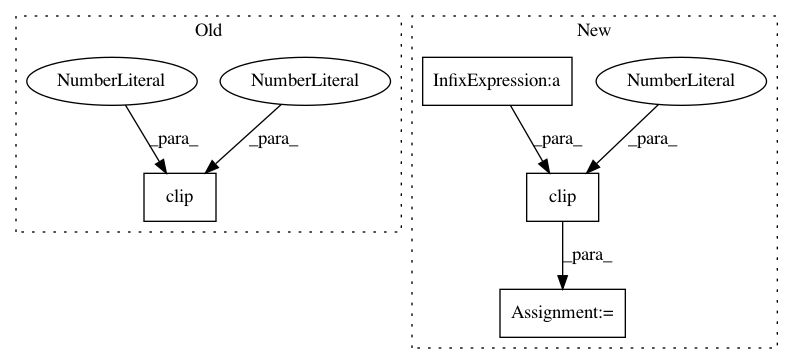

c8a552e62763ed7172b98822bb65838d72fbdb7b,utils/audio.py,AudioProcessor,_normalize,#AudioProcessor#Any#,56
Before Change
self.sample_rate, n_fft, n_mels=self.num_mels)
def _normalize(self, S):
return np.clip((S - self.min_level_db) / -self.min_level_db, 0, 1)
def _denormalize(self, S):
return (np.clip(S, 0, 1) * -self.min_level_db) + self.min_level_db
After Change
S_norm = np.clip(S_norm, -self.max_norm, self.max_norm)
return S_norm
else:
S_norm = self.max_norm * S_norm
if self.clip_norm:
S_norm = np.clip(S_norm, 0, self.max_norm)
return S_norm
else:
return S
In pattern: SUPERPATTERN
Frequency: 3
Non-data size: 4
Instances
Project Name: mozilla/TTS
Commit Name: c8a552e62763ed7172b98822bb65838d72fbdb7b
Time: 2018-11-02
Author: egolge@mozilla.com
File Name: utils/audio.py
Class Name: AudioProcessor
Method Name: _normalize
Project Name: enthought/chaco
Commit Name: 89d09e5bdcef7b225575988dcbc8732518318c87
Time: 2012-02-07
Author: cfarrow@enthought.com
File Name: chaco/transform_color_mapper.py
Class Name: TransformColorMapper
Method Name: _compute_normalized_data
Project Name: interactiveaudiolab/nussl
Commit Name: 18ce3e9fbe8a2ba5b5f94d2e747f65c8a73b3619
Time: 2019-04-27
Author: prem@u.northwestern.edu
File Name: nussl/separation/clustering/clustering_algorithms.py
Class Name: DeepClustering
Method Name: postprocess